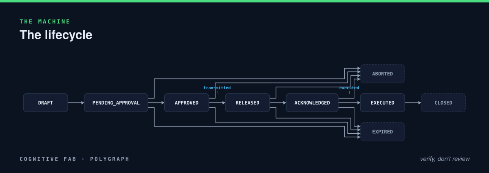
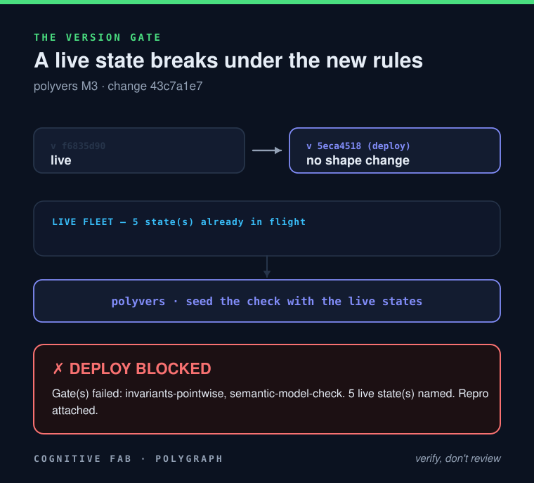

Demo 3 · Polygraph
You change one rule.
The gate tells you which orders already in production the change would break — before you deploy.
The starting point
A machine we've already verified

Model-checked green over 28 reachable states: it can never authorize an order with fewer than two distinct approvers. This rule — two of N — is live.
Reality
Five orders are in flight right now
#3 ACKNOWLEDGED
[bob, carol]
Every one was approved legally under the two-person rule — two distinct approvers.
The change
Two becomes three
- if (approvers.length >= 2) state = 'APPROVED';
+ if (approvers.length >= 3) state = 'APPROVED';
polyvers classify → lanes: vocabulary · intent · semantic
One line in the code, one in the invariant. Tests stay green. In a normal shop, this ships.
The gate
Replay the change against the live fleet

FAIL — exit 1. Four in-flight orders violate the new rule the instant it ships. Order #0 is already authorized with two approvers; the gate names it and the path to execute.
And it won't guess the fix
The deploy carries its own proof
No pure function turns a 2-approver order into a valid 3-approver one — the missing approval is a human act. The gate hands the four named orders to a person to re-open, before the deploy, not after in an incident.
Changing a rule means re-accrediting the system against the state it already holds. Normally: a spreadsheet and a prayer. Here: the deploy tells you exactly what you just invalidated.